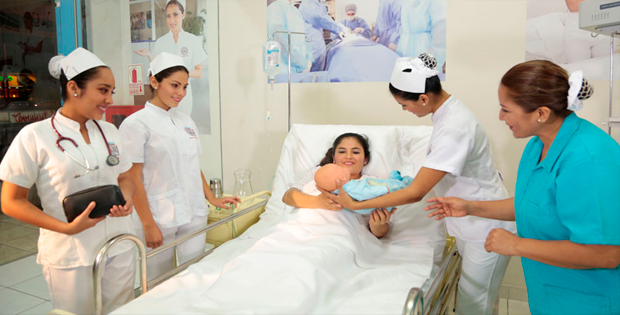
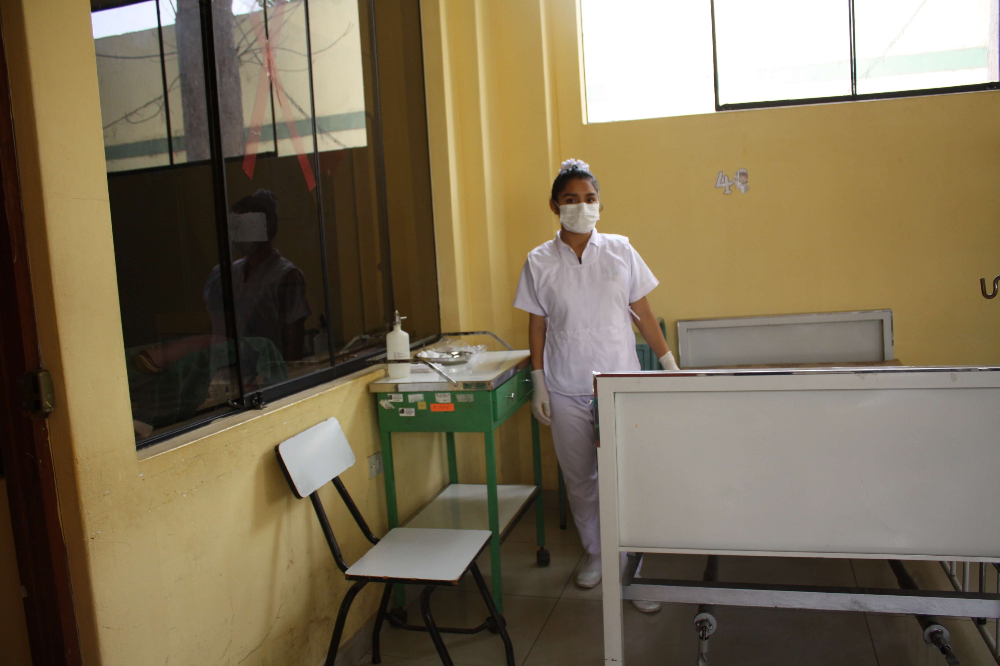

|
Enfermeria Ténica |
|---|
|  |  |
|---|
Títutlo a nombre de la nación como profesional técnico en enfermería técnica
- Plan Curricular Descargar PDF
- Campos de acción en los que se pueden desempeñar los egresados
- Puesto de Trabajos
- Salida a otros Estudios
Competencias Generales
Como ténico en Enfermería Tecnica analiza y resuelve los problemas del cuidado de la salud de los pacientes en distintas etapas de la vida y con patologías agudas o crónicas. Podrá desempeñarse en distintos niveles de atención de salud, brindando cuidado centrado en el paciente, con calidez y sentido ético.
Instituciones públicas y privadas de salud tales como hospitales del Minsa, EsSalud, Fuerzas Armadas y policiales, unidades de rescate, ambulancias, clínicas, entre otras. Organizaciones sociales, centros comunales, ONG, centros del adulto mayor, centros de ayuda infantil, entre otros
Trabajo en Hospitales, Centros de salud, Clínicas, ONGs y entidades públicas y privadas. Atención particular en Enfermería. Atención al niño, al adulto, joven y adulto mayor. Formación de su centro asistencial y/o tópico. Preparación individual y colectiva para desarrollar profesionalmente en el extranjero.
Licenciado en Enfermeria. Docente.